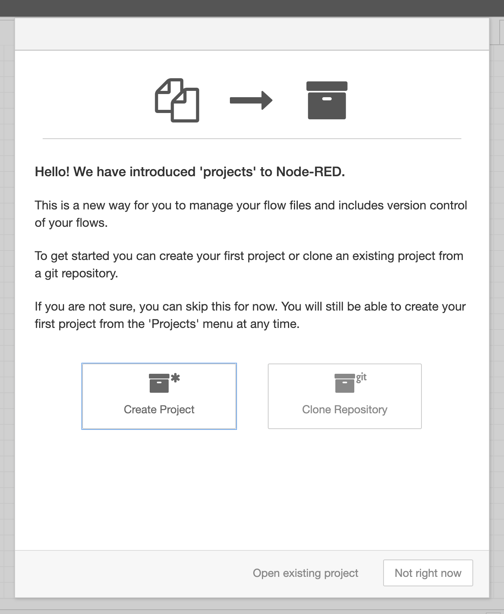

Enabling the Projects feature¶
Node-RED comes with the Projects feature that allows you to version control your flows by creating a git repository around them. You can then commit changes from directly within the editor. You can also connect to a remote repository and push or pull changes to that remote.
This feature needs to be enabled before it can be used.
-
Stop Node-RED by pressing
Ctrl-Cin the terminal window its running in. -
Find your Node-RED
settings.jsfile in your User directory. By default this will be~/.node-red/settings.js. Open it in a text editor. -
Find the
editorThemesection at the bottom of the file. Set theenabledproperty totrue:editorTheme: { projects: { // To enable the Projects feature, set this value to true enabled: true } } -
Save the file and restart Node-RED
The log output should now include the line:
23 Oct 10:49:09 - [warn] No active project : using default flows file
Troubleshooting
If you see a line saying [warn] Projects disabled then you are missing
a prerequisite. The line should tell you what is missing. For example, if it says git command not found then you need to install the git command-line
tool and ensure its on your path before running Node-RED.
Creating a Node-RED Project¶
Once you have enabled the Projects feature, the next time you load the editor in your browser, you will be greeted with a dialog inviting you to create your first project.

Click the Create Project button and follow the steps it takes you through:
- Setup your username/email used to create commits
- Give your project a name and an optional description
- Set the flow file name to `flows.json`
- Configure the encryption of your credentials file.
The project will then be created under ~/.node-red/projects/<name-of-project>.
Next Steps¶
The next task is to install some extra nodes into the palette.